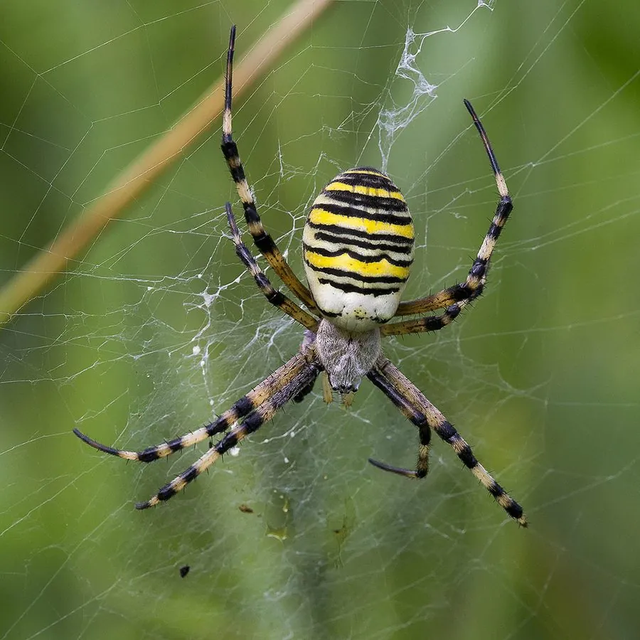

蛛形动物 · 动物界
横纹金蛛 Argiope bruennichi

欧洲与亚洲草地常见的结网蜘蛛，腹部有黄黑相间的横纹，形似胡蜂，结的圆网上常有白色锯齿状丝带。
- 分类
- 门节肢动物门纲蛛形纲目蜘蛛目科园蛛科属金蛛属
- 栖息环境
- 草地、灌丛、农田、花园中低矮植物之间
- 地理分布
- 欧洲、亚洲的温带与亚热带地区，中国多地有分布
- 保护级别
- IUCN 暂无评估；中国未列入国家重点保护名录
物种志
横纹金蛛雌蛛体长 13–20 毫米，雄蛛仅 4–5 毫米，雌雄体型差异悬殊。雌蛛腹部呈椭圆形，背面有鲜明的黄、黑相间的横纹，形似胡蜂，是一种警戒色；头胸部银白色，八足细长。它结大型圆网，网中央常有一条白色锯齿状的丝带（称为“隐带”），可能用于加固蛛网或吸引猎物。
它分布于欧洲、亚洲的草地、灌丛、农田和花园，多在草丛或低矮植物间结网，捕食蝗虫、蝇类、蜜蜂等飞虫，雌蛛常倒挂在网中央。夏末秋初，雌蛛产下含 200–400 枚卵的卵囊，藏在网附近的植物间并守护一段时间，随后死亡；幼蛛孵化后在卵囊中越冬，来年春天扩散。横纹金蛛毒性很弱，对人几乎无害，是草地生态系统中常见的益虫。
形态与习性
- 食性蝗虫、蝇类、蜜蜂等飞虫
- 体长雌蛛 13–20 mm，雄蛛 4–5 mm
- 寿命约 1 年，雌蛛产卵后死亡
- 繁殖卵生，每卵囊 200–400 枚，幼蛛在卵囊中越冬
- 活动节律昼行性，常倒挂在网中央
- 网型大型圆网，中央有白色锯齿状丝带
趣味知识
- 横纹金蛛腹部黄黑相间的横纹很像胡蜂，这是一种警戒色。
- 它的圆网中央常有一条白色锯齿状丝带，被称为“隐带”。
- 横纹金蛛毒性很弱，对人几乎无害，是草地中常见的益虫。